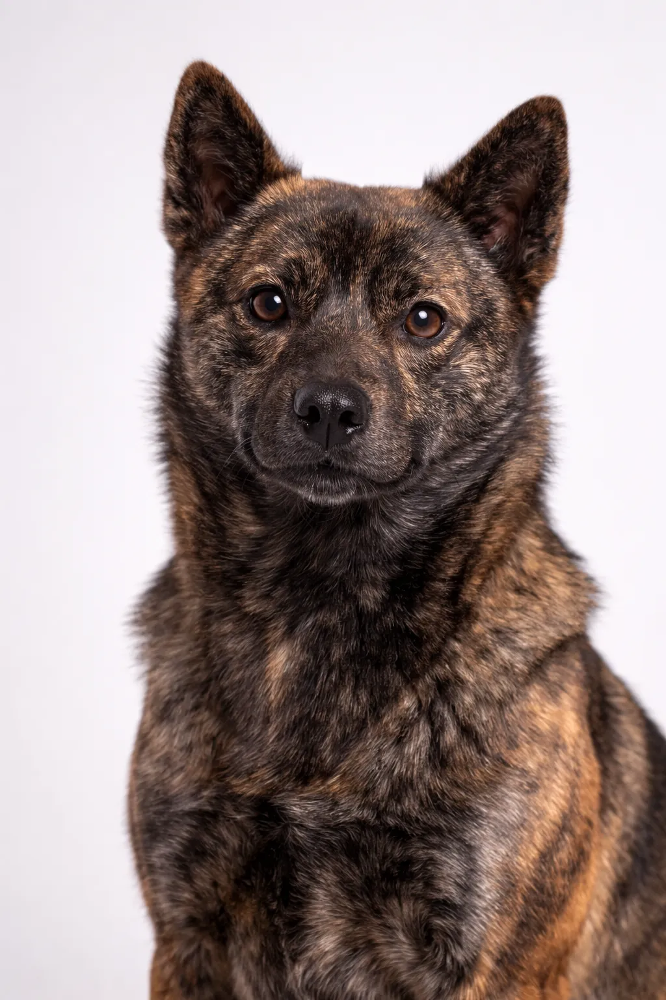

Kai Ken
Ze swoim inteligentny, lojalny charakter, Kai Ken to ukochana rasa nie bez powodu.
18-22 in
24-40 lbs
Oceny Rasy
Temperament
Przegląd
Kai Ken to rzadka japońska rasa znana z charakterystycznej pręgowanej sierści. Jest oddany swojej rodzinie, lecz powciągliwy wobec obcych, co czyni go doskonałym stróżem.
Temperament
Kai Ken znany jest z inteligencji, lojalności i powciągliwości. Doskonałe radzi sobie z dziećmi i jest wspaniałym psem rodzinnym. Wczesna socjalizacja pomaga mu rozwinąć się w harmonijnego towarzysza.
Zdrowie
Rasa ogólnie zdrowa z przeciętną długością życia wynoszącą 12–15 lat. Do częstych problemów zdrowotnych należą dolegliwości stawowe. Ważne są regularne wizyty kontrolne u weterynarza i działania profilaktyczne. Utrzymanie prawidłowej wagi pomaga zapobiegać wielu schorzeniom.
Ćwiczenia
Rasa o dużych potrzebach ruchu, wymagająca intensywnych codziennych ćwiczeń — co najmniej godziny aktywności dziennie. Najlepiej czuje się w aktywnych rodzinach, które lubią spędzać czas na świeżym powietrzu. Równie ważna jest stymulacja umysłowa poprzez szkolenie i zabawki interaktywne. Bez odpowiedniego ruchu mogą pojawić się problemy behawioralne.
⦿ Czy Ta Rasa Jest Dla Ciebie?
✓ Idealna Dla
- Doświadczeni właściciele
- Osoby szukające oddanego towarzysza
- Aktywne rodziny
✗ Nieidealna Dla
- Początkujący właściciele
- Osoby szukające towarzyskiego psa
Nasz Werdykt: Kai Ken to rzadka japońska rasa znana z charakterystycznej pręgowanej sierści. Jest oddany swojej rodzinie, lecz powciągliwy wobec obcych, co czyni go doskonałym stróżem.